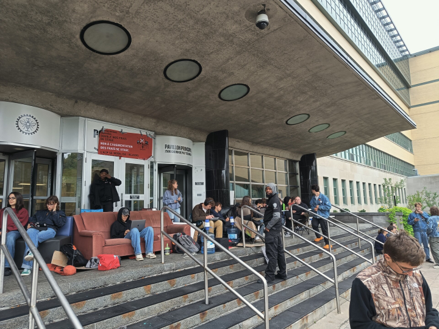
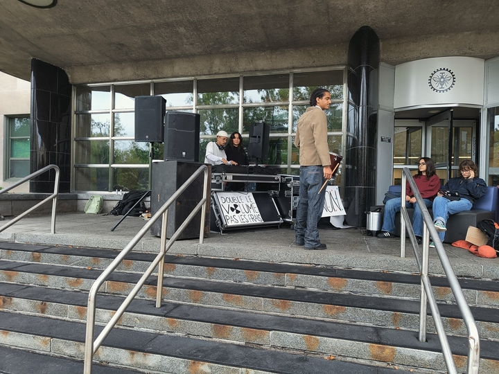

Concert + hockey + silly polytechnique

Of course! Here is a recap of your week in a somewhat silly and ironic style, in the format of a blog post:
Hey blog! This week has been rather packed will all sorts of stuff. Some fun stuff, some very much less so.
The big thing was maybe seeing Viagra Boys live in Montreal. Feels rather ironic that I saw one swedish band, and have two shows of swedes lined up aswell, meanwhile missing the quebecois artist i looked forward to seeing. But so is life. Also, Sweden just produces the best male manipulator music.
They were amazing live. I kinda but also very not ready for the chaos that ensued. It was constant moshing. It was crowdsurfing. There were pits. The performance was amazing. I could not ask for anything more quite honestly. Something I noticed was that the crowd was very old. I had this notion of a Viagra Boys fan from back in sweden, being a 20 something year old man from some hip suburb of Stockholm and doing drugs as a hobby. However, the median age was probably well over 40, men and women mixed. Still, my presumption is that they were from hip quarters in Montreal, and every now and then I smelt weed in the concert hall. So maybe Montreal is just ahead of Sweden and the 20 something men have turnt into 40-50 something men and women, still smoking weed and living in the hip quarters. Love that for them.
I came around an hour early, which was plenty of time to get to more or less the front by the time it started. However, of course, the moshing dragged me with and i ended up standing at all different sorts of places in the venue throughout the show. In the end though, I just kinda ended up at the barricade where i spent the last part. Lucky me, as that was just when the lead singer came up to me and let me scream some of the lyrics to the song. it happened trust video in whatsapp.
Second fun thing was seeing a hockey game. Yeah sure, felt very touristy, but it was great to see. I actually have not seen any hockey game in Sweden, so this was just as much of a first for me as for my french flatmates with supposedly zero ice skating skills. Can you imagine? Not having english come to you naturally AND not being able to go ice skating? A silent minute to all my homies that are french.
Anyways, hockey was cool and all. We saw the Montreal Canadiens vs Toronto Maple Leaves, apparently pre-season game or something like that. It reminded me a lot of my handball days with how masculine everything felt. You could litteraly taste the testosterone in the air. Would I go again? Not really. It was also quite expensive. And we lost 7-2. I assume everyone in Montreal Canadiens both speak english perfectly and can ice skate, but they deserve a silent minute too.
{kind=link}
{kind=link}
{kind=link}
To complete the two starts and a wish, I wish that Polytechnique had their shit figured out a lot more than they apparently do. I tried to abandon a course that I had forgotten to deregister from during the period where it was easy to do. So I sent in the form, got an email saying "Vous êtes desinscrit" and didn't think anything more of it. All sunshine and rainbows right? Wrong. These people interpreted me wanting to abandon one course as wanting to abandon my studies altogether. As you do right? So I saw over the span of a couple of days as more and more of my IT services stopped working, and at the time I didn't even know why. Going to the IT services, they just told me lol your account says you're not a student here anymore good luck talk 2 sum1 elz. Going to the registrars office, they could help me, but only after waiting in like for like an hour. And of course, they were only open during class hours. Fun 😀👍
Atleast they fixed their error and I have my accounts back and I just have one course missing, that I send an email about on Thursday. But of course love you cannot expect them to fix everything wrong <3
Also, there has been a huge debate about increasing internship fees for students at the university. Right now there is a cost of about 1300CAD for a Quebec native bachelor's student to do their mandatory internship. However, the university wants to increase that to 3000CAD and also remove the internship stipend that people recieve. As you do right. The student union of course answered firmly with no <3 and decided on a strike when the university didn't back down. So I had no classes this friday. Quite unclear whether they will be postponed or if I have to read up on the things on my own. But there were picket lines and blockades and everything. And of course, the university board is now blaming the student union and scaring us with extending the semester dates. So uh yeah if the strike continues, who knows if I will be able to do my exams or not before leaving Montreal? Meanwhile the extra money from the internship would make up like 0.1% of the revenue of the university. And they're shaming the students in local newspapers for speaking up about it? bro
It doesn't even affect me but the way the communication has been done from the board has just seemed childish.
{kind=link}

{kind=link}

I am honestly getting so sick of the university. First of all, they knew about the visa delay thing all over Canada back in July, and didn't send out any info or warn us about it. They also made zero effort in integrating the people that came late, and we were quite a lot. No welcome activities, no info meetings, nothing. The professors are overall quite bad aswell. And on top of all that, the fact that the university board is increasing the fees for students and then blaming the students for speaking up. And now me getting deregistered completely and having to wait in like at the kafka office for an hour to get them to fix their shit. They aint getting a positive end of exchange summary from me, that's for sure.
Anyways, that's more or less all for this week. I am hoping that I can keep up the 1x/week posting going forward. Also, other new things have been added to the website! Check out my song recommendations! Check out my socials on the bottom! And dont forget to join the whatsapp group!!!
Puss puss love yall <3